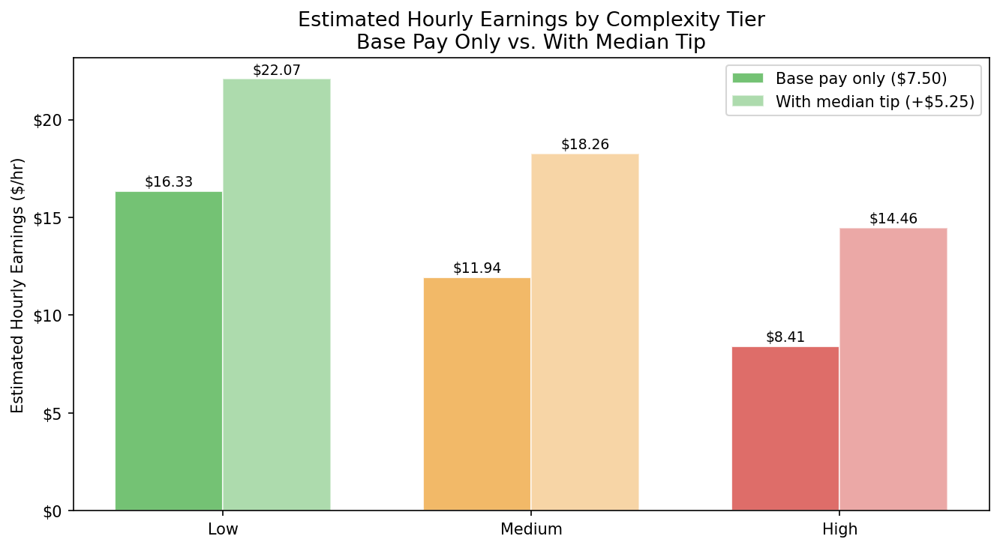
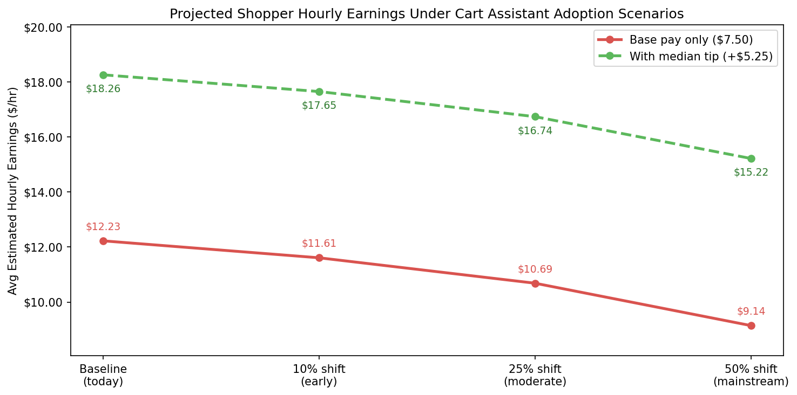

Project B · Policy Analysis · March 2026
Shopper Earnings at Risk: Modeling the Fulfillment Cost of Agentic Commerce
The side of the marketplace that wasn’t the primary audience
Cart Assistant was built to serve retailers and their customers. Retailers get a competitive, AI-powered shopping experience. Consumers get a smarter, more personalized way to build their grocery baskets. Advertisers benefit indirectly: higher-intent consumers building larger, more intentional baskets means better placement opportunities and stronger conversion on sponsored products.
What is less examined is what happens to the fourth side: shoppers.
When a consumer checks out through a Cart Assistant-powered retailer experience, the order is passed to Instacart’s fulfillment engine and assigned to a shopper. The shopper receives a standard SKU list. The recipe Cart Assistant built the cart around, the dietary constraints the consumer mentioned, the preference hierarchy it optimized for: all of that stays in the session and goes no further.
A product can work exactly as designed and still create unintended costs for the people who make it run. This project is about what Cart Assistant costs the shoppers who fulfill its orders.
Building a complexity score
Since Cart Assistant order data is not publicly available, I defined a “high-complexity order proxy” using five structural features from the Kaggle dataset. Each feature was normalized to a 0–1 scale and combined with equal weights into a composite score per order. Orders were then split into Low, Medium, and High tiers using quantile-based segmentation.
| Feature | Rationale |
|---|---|
| Order size (item count) | More items = more decisions and substitution risk |
| Unique aisles visited | More aisles = longer physical pick path |
| Department diversity | Crossing departments signals a multi-meal or multi-purpose cart |
| Reorder rate (inverted) | Low reorder rate = more unfamiliar items = more decision time per item |
| Days since prior order | Longer gaps signal a full shop, not a top-up |
What the earnings model found

| Tier | Avg hourly (base only) | Avg hourly (with tip) | Avg fulfillment time |
|---|---|---|---|
| 🟢 Low | $16.33/hr | $22.07/hr | 30.4 min |
| 🟡 Medium | $11.94/hr | $18.26/hr | 45.1 min |
| 🔴 High | $8.41/hr | $14.46/hr | 67.8 min |
What happens as Cart Assistant adoption grows

| Scenario | Projected avg hourly | Change from baseline |
|---|---|---|
| Baseline (today) | $12.23/hr | – |
| 10% shift to High complexity | $11.61/hr | −5.1% |
| 25% shift to High complexity | $10.69/hr | −12.6% |
| 50% shift to High complexity | $9.14/hr | −25.3% |
Why each side of the marketplace has a stake in this
Shopper
The earnings gap is invisible to the people experiencing it. They just notice their hourly yield feels lower on certain orders, and over time they either start avoiding complex batches or leave the platform altogether.
Consumer
Cart Assistant’s highest-intent orders get deprioritized or fulfilled with errors by time-pressured shoppers. The consumer-facing improvement degrades at the fulfillment layer.
Retailer
Retailers evaluate Cart Assistant on outcomes. When shoppers make errors on complex orders, retailers may lose confidence in the product even though the underlying issue is about how shoppers are compensated for complex work.
Advertiser
Cart Assistant tends to generate larger, more intentional baskets built around meals and dietary goals. That is exactly the kind of shopping context where sponsored product placement performs well. If fulfillment quality on those orders degrades, the consumer experience that makes them worth targeting gets worse too.
Three options and a recommendation
Connection to Project A
Project A asks: when a Cart Assistant-generated order hits an out-of-stock item, is the substitute safe for the consumer? Project B asks: what is the cost to the shopper of navigating these decisions without context, and does that cost scale with order complexity?
Both projects trace back to the same missing piece. Cart Assistant session context needs to flow downstream: to the substitution engine in Project A, and to the shopper before they start picking in Project B. Building that pipeline once and routing it to both surfaces is more efficient than building it twice, and it makes the combined case for investing in it much harder to ignore.
Back to Project A
Catalog-Powered Smart Substitution via Store View →